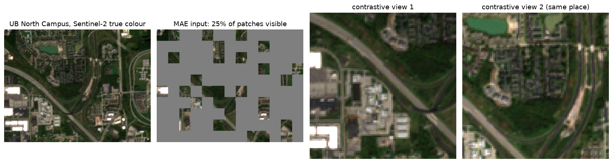
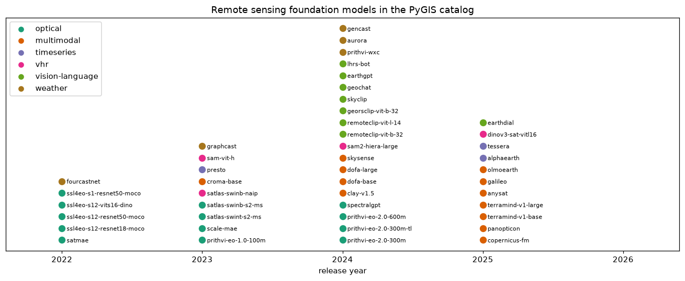
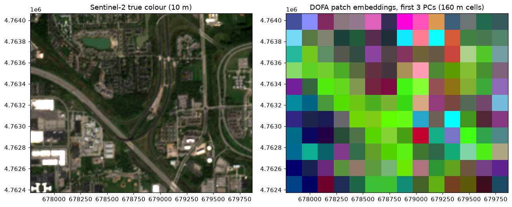
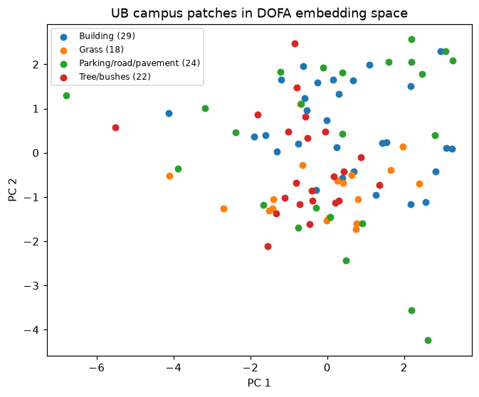

What Foundation Models Are and Why Remote Sensing Needs Them
A foundation model is a large network trained once, without labels, on a very large and varied archive, and then reused for many tasks. Earth observation is a natural fit: satellites deliver petabytes of imagery every year, while labelled samples stay scarce, expensive and local. This notebook explains how remote sensing foundation models are trained, what makes satellite data different from photographs, the ways a pretrained model can be used, and what the published benchmarks say about them. It then tours the 45 models in geolattice.rsense.foundation_models and turns a Sentinel-2 image of a university campus into embeddings with one of them.
Fourteen notebooks take a pretrained model from that idea to a benchmark on your own data.
What Foundation Models Are and Why Remote Sensing Needs Them. This notebook. How these models are trained, what makes satellite data different from photographs, and a first embedding of a Sentinel-2 campus scene.
Self-supervised pretraining for Sentinel-2 crop mapping. SimCLR, MoCo with seasonal views, and a masked autoencoder on unlabeled Iowa Sentinel-2, scored with a linear probe against the Cropland Data Layer.
Geospatial foundation models: embeddings, promptable segmentation and zero-shot classification. Prithvi, DOFA, Segment Anything, and RemoteCLIP, each scored against reference labels.
From a GeoTIFF to an Embedding Map. Bands, units, normalization, and chip size for a Sentinel-2 scene of the Iowa Corn Belt, then the embedding map.
Prithvi, SSL4EO, SatlasPretrain and Scale-MAE on Sentinel-2. Four optical encoders on the same Iowa Corn Belt scenes.
One Model for Many Sensors: DOFA, Panopticon, Copernicus-FM, CROMA and TerraMind. Sentinel-2, Landsat 8, and Sentinel-1 of the same Iowa fields, and whether a classifier trained on one sensor transfers.
Time in Foundation Models: Prithvi-TL, AnySat, Presto and Galileo. One to four Sentinel-2 dates of the 2025 Iowa season, with and without date and location inputs.
AlphaEarth Foundations: Precomputed Embeddings for the Whole Planet. A 64-band, 10 m embedding already computed for every land pixel, every year since 2017.
Foundation Model Embeddings as Covariates: Digital Soil Mapping of SOC. Topsoil organic carbon mapped with embeddings used as covariates.
Very High Resolution: DINOv3-sat, Satlas NAIP, Scale-MAE and SAM 2. Roofs, trees, and field boundaries on a 1.6 m WorldView-2 scene and 50 cm DeepGlobe images.
Vision-Language Models: Zero-Shot Classification and Text Retrieval. RemoteCLIP and GeoRSCLIP on EuroSAT, and how the wording of the class descriptions changes the score.
Change and Similarity in Embedding Space. The 2026 Bug Fire from pre-fire and post-fire Sentinel-2 embeddings, scored against the fire perimeter and dNBR.
Weather and Earth System Foundation Models. Learned weather models compared, then Aurora on ERA5 from WeatherBench2.
Benchmarking Foundation Models on Your Own Data. One harness for EuroSAT scene classification and early-season corn and soybean mapping.
Overview
From one model per task to one model for many tasks
A classical workflow trains a new model for every map: a random forest for crop types in Iowa, a U-Net for buildings in Dhaka, another network for floods. Each needs its own labels and learns the basic structure of satellite imagery (what a field edge, a river or a road looks like) from scratch. A foundation model separates the two. It first learns general visual and spectral structure from unlabelled imagery (pretraining), then a small labelled set adapts it to a task (transfer). The pretrained network is called an encoder or backbone, and the vector it returns for an image or a patch is an embedding.
The name comes from Bommasani et al. (2021): a model trained on broad data that can be adapted to a wide range of downstream tasks. “Foundation” says nothing about accuracy. A foundation model can be worse than a well tuned random forest on a given task, and the benchmarks below show that this happens.
Why labels are the bottleneck in Earth observation
Field data are slow to collect and rarely shared; labels from one region or year often do not transfer to another.
Reference maps such as the USDA Cropland Data Layer exist for few countries and few classes.
The imagery itself is abundant and free: Sentinel-2 alone images every land surface every five days at 10 to 60 m.
Pretraining moves most of the learning onto the free part (imagery) so that the expensive part (labels) is needed only for the last step.
How remote sensing foundation models are pretrained
Objective
Idea
Examples in GeoLattice
Masked autoencoding (MAE)
Hide most image patches and reconstruct them from the rest
Prithvi-EO, SatMAE, Scale-MAE, Clay, DOFA
Contrastive learning
Pull two views of the same place together, push other places apart
SSL4EO MoCo, CROMA (optical vs SAR views)
Self-distillation
A student network matches a slowly updated teacher on different crops
SSL4EO DINO, DINOv3-sat, Panopticon
Joint embedding prediction (JEPA)
Predict the embedding of hidden parts instead of their pixels
AnySat, Galileo
Generative any-to-any
Generate one modality (SAR, DEM, land cover) from another
TerraMind
Image-text alignment
Match images with their captions
RemoteCLIP, GeoRSCLIP, SkyCLIP
Embedding fields
Summarize a year of many sensors into one vector per pixel
AlphaEarth Foundations
Notebook 09_11_01 trains SimCLR, MoCo and a masked autoencoder at small scale, so this notebook keeps the theory short and shows what two of the objectives see.
What makes satellite imagery different
Many bands. Sentinel-2 has 13, Landsat 11, hyperspectral sensors hundreds, and SAR records polarizations instead of colours. A network pretrained on red, green and blue photographs has no input for the shortwave infrared.
Many sensors. A model trained on Sentinel-2 should not silently accept WorldView-2 bands in the same order. Wavelength-conditioned input layers (DOFA, Copernicus-FM, Panopticon) build their first layer from the band wavelengths, so one model accepts any band set.
Ground sample distance (GSD). The same 224 pixel chip covers 2 km of Sentinel-2 or 70 m of aerial imagery. Scale-MAE encodes the GSD in its position encoding.
Time. Crops, snow and floods are defined by change through a season. Prithvi-EO-2.0 takes several dates as a 3-D input and can add date and location tokens (the TL variants).
Geolocation. Every pixel has coordinates, so models can use location, and evaluation must keep training and test areas apart (spatial autocorrelation).
Archive size. SSL4EO-S12 holds about 3 million Sentinel-1 and Sentinel-2 patches, SatlasPretrain 302 million labels, DINOv3-sat 493 million Maxar images.
Tokens, patches and embeddings
Vision transformers (ViT) cut an image into square patches, usually 16 by 16 pixels, and turn each patch into a token vector. A 224 pixel chip therefore becomes 14 x 14 = 196 tokens, often plus one class token (CLS) that summarizes the whole chip. The model returns:
patch embeddings: one vector per patch, a coarse feature map (14 x 14 for a 224 chip);
image embeddings: one vector per chip, either the CLS token or the mean of the patch tokens;
pixel embeddings: per-pixel products such as AlphaEarth, or patch features upsampled to pixels.
The embedding dimension is the length of the vector: 384 to 1280 for the ViTs here, 512 or 2048 for ResNets, 64 for AlphaEarth.
Ways to use a foundation model
Use
Labels needed
Compute
Typical result
Frozen embeddings + simple model (linear probe, kNN, random forest)
few to moderate
inference only
quick baseline, good for similarity and clustering
Partial or full fine-tuning
moderate
training on a GPU
best accuracy when labels suffice
Encoder + segmentation decoder
pixel masks
training
land cover, crops, floods (TerraTorch)
Zero-shot with text
none
inference
scene labels from words; must be checked
Precomputed embedding products
few
none locally
AlphaEarth: covariates without running a model
A linear probe trains only a linear classifier on frozen embeddings. It is the standard way to ask “how much does the encoder already know?”, and this chapter uses it throughout.
What the benchmarks say
GEO-Bench (Lacoste et al. 2023) and PANGAEA (Marsocci et al. 2024) compare many models on the same tasks with the same protocol. Two findings matter in practice: no model is best on every task, and a supervised U-Net trained on the task data is a strong baseline that several foundation models do not beat, especially when enough labels exist or the target sensor differs from the pretraining data. Gains are largest with few labels and with data close to the pretraining distribution. Every comparison in this chapter therefore keeps a simple baseline and uses spatial cross-validation.
Licences and compute
Weights come with licences that range from Apache 2.0 and CC BY to research-only and gated access (DINOv3-sat). Always read the model card before using a model in a product. Pretraining needs large GPU clusters, but inference does not: every model in this chapter runs on one 16 GB GPU, and the smaller ones on a CPU.
Foundation Models with GeoLattice
geolattice.rsense.foundation_models (imported as fm) gives every model one interface:
Function
Purpose
fm.list_models, fm.model_info, fm.CATEGORIES
the catalog of 45 models
fm.recommend(task, sensor=)
models to try first for a task
fm.load_model(name, bands=)
download and wrap a model as a FoundationEncoder
enc.encode, enc.embed, enc.embed_raster
embeddings for tensors, arrays or georeferenced rasters
Explain pretraining, transfer, encoders, tokens and embeddings.
Name the main pretraining objectives and what makes satellite data different from photographs.
Choose between frozen embeddings, fine-tuning, zero-shot and embedding products.
Browse the catalog by category, modality and year, and get recommendations for a task.
Load a wavelength-aware model and turn a Sentinel-2 image into patch embeddings.
Check what the embeddings separate with a quick PCA view and a linear probe.
Data
Dataset
Content
UB North Campus Sentinel-2
10 bands (B2 to B12), 10 m, 170 x 210 pixels, Buffalo, New York (UTM 17N)
UB labelled points
23,945 pixels in five land use classes: tree/bushes, parking/road/pavement, grass, building, water
Contents
Setup
What two pretraining objectives see
The model catalog
Choosing a model for a task
From an image to patch embeddings
What the embeddings separate
Summary and exercises
Setup
Installation. This notebook needs installation option 6 (every GeoLattice module): pip install "geolattice[all]". See “Installation options” in the GeoLattice README. It also uses geolattice[rsense-foundation], which no GeoLattice option installs: pip install "geolattice[rsense-foundation]".
Code
import os # environment variablesos.environ.setdefault("USE_TF", "0") # keep transformers from loading TensorFlowimport time # timingimport warnings # warning controlwarnings.filterwarnings("ignore") # hide routine library warningsfrom pathlib import Path # file pathsimport matplotlib.pyplot as plt # figuresimport numpy as np # arraysimport pandas as pd # tablesimport rioxarray # noqa: F401 (registers the .rio accessor)import torch # PyTorch: every model runs on itimport xarray as xr # labelled rastersimport geolattice # GeoLatticeimport geolattice.rsense.foundation_models as fm # catalog, loaders, embeddings and probesplt.rcParams.update({"figure.dpi": 110}) # figure resolutionDATA = Path("../../../../Data/08_remote_sensing") # remote sensing data folderIC = DATA /"09_09_image_classification"# data shared with the image classification chapterCAP = DATA /"08_11_Capstones"# data shared with the capstonesOUT = Path("outputs") # results written by this notebookOUT.mkdir(exist_ok=True) # create it if neededDEVICE ="cuda"if torch.cuda.is_available() else"cpu"# run models on the GPU when there is oneSEED =0# one seed for every random stepnp.random.seed(SEED) # NumPytorch.manual_seed(SEED) # PyTorchprint("GeoLattice", geolattice.__version__, "| PyTorch", torch.__version__, "| device", DEVICE) # versions usedif DEVICE =="cuda": # name the GPUprint("GPU:", torch.cuda.get_device_name(0)) # GPU modelUB = IC /"Sentinel_2_UB"# UB North Campus Sentinel-2 bands and labelled pointsBANDS = {"B2": "blue", "B3": "green", "B4": "red", "B5": "rededge1", "B6": "rededge2","B7": "rededge3", "B8": "nir", "B8A": "nir08", "B11": "swir16", "B12": "swir22"} # file -> band name
The UB North Campus image is read band by band into one (band, y, x) DataArray. The GeoTIFFs store reflectance multiplied by 10,000 and carry no CRS, so the UTM zone 17N CRS of the labelled points is attached.
Code
ub = xr.concat([rioxarray.open_rasterio(UB /"Images"/f"{f}.tif").squeeze("band", drop=True)for f in BANDS], dim=pd.Index(list(BANDS.values()), name="band")) # 10-band stackub = (ub.astype("float32") /10000).rio.write_crs("EPSG:32617") # reflectance 0 to 1, UTM 17Nprint(dict(ub.sizes), "| pixel", ub.rio.resolution(), "m | bands:", list(ub.band.values)) # shape and bandsdef rgb(da, gain=3.5): # true colour image for displayreturn np.clip(da.sel(band=["red", "green", "blue"]).transpose("y", "x", "band").values * gain, 0, 1) # stretched RGB
A masked autoencoder hides about 75 % of the 16 x 16 pixel patches and learns to rebuild them from the visible quarter. A contrastive model sees two random views of the same place (crops, flips, colour changes) and learns to give them similar embeddings. Both tasks are defined by the images alone, which is why no labels are needed.
Code
rng = np.random.default_rng(SEED) # random generatorimg = rgb(ub)[:160, :208] # campus image cut to whole 16 px patchesP =16# patch size in pixelsgrid = (img.shape[0] // P, img.shape[1] // P) # patches per column and rowkeep = np.zeros(grid[0] * grid[1], bool) # visible patcheskeep[rng.choice(keep.size, keep.size //4, replace=False)] =True# MAE keeps one patch in fourkeep = keep.reshape(grid) # back to the patch gridmasked = img.copy() # masked copy of the imagefor (r, c), k in np.ndenumerate(keep): # every patchifnot k: # hidden patch masked[r * P:(r +1) * P, c * P:(c +1) * P] =0.5# grey it outdef view(im, rng): # a random contrastive view: crop, flip and brightness change h, w = im.shape[:2] # image size s = rng.integers(80, 120) # crop size r0, c0 = rng.integers(0, h - s), rng.integers(0, w - s) # crop corner v = im[r0:r0 + s, c0:c0 + s] # the crop v = v[:, ::-1] if rng.random() <0.5else v # random horizontal flipreturn np.clip(v * rng.uniform(0.7, 1.3), 0, 1) # random brightnessfig, ax = plt.subplots(1, 4, figsize=(15, 4)) # four panelsax[0].imshow(img); ax[0].set_title("UB North Campus, Sentinel-2 true colour") # originalax[1].imshow(masked); ax[1].set_title(f"MAE input: {keep.mean():.0%} of patches visible") # masked inputax[2].imshow(view(img, rng)); ax[2].set_title("contrastive view 1") # first viewax[3].imshow(view(img, rng)); ax[3].set_title("contrastive view 2 (same place)") # second viewfor a in ax: # every panel a.axis("off") # hide the axesplt.tight_layout(); plt.show() # draw

The MAE must infer roads, roofs and lawns under the grey patches from their surroundings, which forces it to learn spatial and spectral structure. The contrastive model must recognise that the two crops show the same place despite the flip and brightness change, so it learns features that ignore those nuisances.
The model catalog
fm.list_models() returns one row per model: provider, year, input modalities, whether it handles time, embedding size, parameters, how GeoLattice loads it and what it is used for.
Code
cat = fm.list_models() # the full catalogprint(len(cat), "models |", int(cat["loadable"].sum()), "loadable with fm.load_model") # countspd.DataFrame({"models": cat.groupby("category").size(), # models per category"loadable": cat.groupby("category")["loadable"].sum()} ).rename(index=fm.CATEGORIES) # long category names
45 models | 24 loadable with fm.load_model
models
loadable
category
Multi-sensor and any-modality encoders (optical, SAR, DEM, any band set)
The loader column says how a model is obtained. torchgeo, terratorch, open_clip, torch.hub and transformers models download their weights on the first fm.load_model call. earthengine is AlphaEarth, which is a dataset rather than a model to run. adapter models need a local checkpoint, and external models are listed with their weights and references but run through their authors’ code.
The release years show how quickly the field has grown, and how it moved from single-sensor optical encoders to multi-sensor and any-band models.
Code
colors =dict(zip(fm.CATEGORIES, ["#1b9e77", "#d95f02", "#7570b3", "#e7298a", "#66a61e", "#a6761d"])) # colour per categoryfig, ax = plt.subplots(figsize=(12, 5)) # one paneloffset = cat.groupby("year").cumcount() # stack models released in the same yearfor name, row in cat.iterrows(): # every model ax.scatter(row["year"], offset[name], s=60, color=colors[row["category"]]) # one dot ax.annotate(name, (row["year"], offset[name]), xytext=(6, -3), textcoords="offset points", fontsize=7) # its namefor c, col in colors.items(): # legend entries ax.scatter([], [], color=col, label=c) # empty handle with the category colourax.legend(loc="upper left"); ax.set_xlabel("release year"); ax.set_yticks([]) # labelsax.set_xlim(2021.6, 2026.4); ax.set_title("Remote sensing foundation models in the GeoLattice catalog") # limits and titleplt.tight_layout(); plt.show() # draw

Filters narrow the list. Models that accept SAR, models with time support, and the vision-language models are three common questions.
fm.model_info returns every field of one entry, including the expected inputs, the weights and the reference. The inputs line is the first thing to check: it says which bands, scaling and chip size the model was trained with.
Code
info = fm.model_info("prithvi-eo-2.0-300m") # one catalog entry{k: info[k] for k in ("provider", "architecture", "inputs", "embed_dim", "weights", "reference")} # key fields
fm.recommend returns a short list of models to try first for a task. A sensor filter drops models that cannot read that sensor. The list is a starting point from benchmarks and practice; the comparison on your own data (notebook 09_11_13) decides.
Code
tasks = ["covariates", "segmentation", "timeseries", "multisensor", "vhr", "zero-shot", "change"] # common taskspd.DataFrame({t: pd.Series(fm.recommend(t)["name"].tolist()) for t in tasks}).fillna("") # top models per task
covariates
segmentation
timeseries
multisensor
vhr
zero-shot
change
0
alphaearth
prithvi-eo-2.0-300m
presto
dofa-base
dinov3-sat-vitl16
remoteclip-vit-b-32
alphaearth
1
clay-v1.5
terramind-v1-base
galileo
copernicus-fm
satlas-swinb-naip
georsclip-vit-b-32
prithvi-eo-2.0-300m
2
presto
satlas-swinb-s2-ms
prithvi-eo-2.0-300m-tl
panopticon
sam2-hiera-large
skyclip
dofa-base
3
ssl4eo-s12-resnet18-moco
dofa-base
anysat
terramind-v1-base
sam-vit-h
sam2-hiera-large
4
alphaearth
croma-base
5
clay-v1.5
Code
fm.recommend("multisensor", sensor="sentinel-1") # models that also read SAR
name
loader
why
rank
1
dofa-base
torchgeo
mixed sensors; unusual band sets; hyperspectral
2
copernicus-fm
torchgeo
Copernicus multi-mission; atmospheric variables
3
panopticon
torchgeo
any sensor embeddings
4
terramind-v1-base
terratorch
missing modality synthesis; multimodal segment...
5
croma-base
torchgeo
optical-SAR fusion; cloudy regions
6
clay-v1.5
adapter
embeddings; similarity search; land cover
From an image to patch embeddings
DOFA (Xiong et al. 2024) is a ViT-Base whose first layer is generated from the band wavelengths, so it reads the ten UB bands directly. fm.load_model("dofa-base") downloads the weights once; embed_raster standardizes each band, cuts the raster into 224 pixel chips (one chip here, padded by reflection) and, with dense=True, returns the 14 x 14 grid of patch embeddings of each chip as a georeferenced map. Each cell is a 16 x 16 pixel (160 m) patch.
Code
enc = fm.load_model("dofa-base", device=DEVICE) # DOFA ViT-Base with MAE weightst0 = time.perf_counter() # start the clockpatch = enc.embed_raster(ub, chip_size=224, dense=True) # (768, y, x) patch embeddingsprint(enc, "| wavelengths (nm):", enc.wavelengths) # model and the band wavelengths it usedprint("patch embeddings:", dict(patch.sizes), f"in {time.perf_counter() - t0:.1f} s") # result sizeimage_vec = enc.embed_raster(ub, chip_size=224) # one pooled vector for the whole chipprint("image embedding:", dict(image_vec.sizes)) # one cell of 768 values
The patch map has 11 x 14 cells (the padded part beyond the campus is cropped), each a 768 value vector. fm.embedding_rgb projects the vectors onto their first three principal components and shows them as colours, so cells the model sees as similar get similar colours.
Code
fig, ax = plt.subplots(1, 2, figsize=(12, 5)) # two panelsext = [float(ub.x.min()), float(ub.x.max()), float(ub.y.min()), float(ub.y.max())] # map extentax[0].imshow(rgb(ub), extent=ext); ax[0].set_title("Sentinel-2 true colour (10 m)") # imagepc = fm.embedding_rgb(patch) # first three principal components as RGBax[1].imshow(pc.transpose("y", "x", "band"), extent=ext, interpolation="nearest") # embedding coloursax[1].set_title("DOFA patch embeddings, first 3 PCs (160 m cells)") # titleplt.tight_layout(); plt.show() # draw

What the embeddings separate
Each labelled point falls into one 160 m cell. A cell is labelled with the most common class of its points, kept only when that class covers at least 60 % of them, so mixed cells drop out.
Code
pts = pd.read_csv(UB /"Label_Point_Data"/"point_data.csv") # labelled pixelsiy = np.abs(patch.y.values[None, :] - pts["y"].values[:, None]).argmin(1) # nearest cell rowix = np.abs(patch.x.values[None, :] - pts["x"].values[:, None]).argmin(1) # nearest cell columnpts["cell"] = iy * patch.sizes["x"] + ix # cell index of every pointshare = pts.groupby("cell")["Landuse"].agg(lambda s: s.value_counts(normalize=True).iloc[0]) # majority sharemajor = pts.groupby("cell")["Landuse"].agg(lambda s: s.value_counts().index[0]) # majority classcells = pd.DataFrame({"class": major, "purity": share, "n_points": pts.groupby("cell").size()}) # per-cell tablecells = cells[cells["purity"] >=0.6] # keep cells dominated by one classcells = cells[cells["class"].map(cells["class"].value_counts()) >=4] # classes with enough cells for 4 foldsX = patch.values.reshape(patch.sizes["embedding"], -1).T[cells.index] # embedding of each kept cellprint(len(cells), "labelled cells"); cells["class"].value_counts() # cells per class
93 labelled cells
class
Building 29
Parking/road/pavement 24
Tree/bushes 22
Grass 18
Name: count, dtype: int64
Code
from sklearn.decomposition import PCA # principal componentsZ = PCA(2, random_state=SEED).fit_transform(X) # 768 values -> 2 for plottingfig, ax = plt.subplots(figsize=(7, 5.5)) # one panelfor c insorted(cells["class"].unique()): # every class m = (cells["class"] == c).values # its cells ax.scatter(Z[m, 0], Z[m, 1], s=30, label=f"{c} ({m.sum()})") # its pointsax.set_xlabel("PC 1"); ax.set_ylabel("PC 2"); ax.legend(fontsize=8) # labelsax.set_title("UB campus patches in DOFA embedding space"); plt.show() # draw

Water covers only two cells of the campus, too few for four cross-validation folds, so it is left out. The scatter shows how the classes spread in the two directions of largest variance. A linear probe measures separability in all 768 dimensions. With so few cells the probe uses leave-out folds of four, and its score is a rough indication, not a benchmark: neighbouring cells are spatially correlated, which notebook 09_11_04 handles with spatial cross-validation. A logistic regression on the cell’s mean band values is the baseline the embeddings have to beat.
Code
means = ub.coarsen(y=16, x=16, boundary="pad").mean() # mean reflectance per 160 m cellB = means.values.reshape(means.sizes["band"], -1).T # (cells, 10 bands)B = np.nan_to_num(B[: patch.sizes["y"] * patch.sizes["x"]]) # same cell order as the patch mapy = cells["class"].values # cell classesprobe = fm.linear_probe(X, y, cv=4) # DOFA embeddingsbase = fm.linear_probe(B[cells.index], y, cv=4) # band meanspd.DataFrame({"DOFA patch embeddings": probe["mean"], "mean band values": base["mean"]}).round(3) # accuracy and macro F1
DOFA patch embeddings
mean band values
accuracy
0.613
0.527
f1_macro
0.602
0.519
The DOFA embeddings separate the four classes better than the mean band values of the same cells, because each embedding also describes the arrangement of roofs, roads and trees inside its 160 m patch, not just its average colour. Read the numbers with care all the same: with about ninety cells and random folds the scores move by several points from one split to another, and neighbouring cells share information. The rest of the chapter uses larger labelled sets, spatial folds and several models, so that such comparisons become meaningful.
Summary and exercises
Summary
A foundation model is pretrained once without labels and adapted to many tasks; its encoder turns an image or a patch into an embedding.
Pretraining objectives include masked autoencoding, contrastive learning, self-distillation, joint embedding prediction, generative any-to-any models, image-text alignment and embedding fields.
Satellite data differ from photographs in bands, sensors, ground sample distance, time and geolocation; wavelength-aware, GSD-aware and temporal models address these.
Models can be used as frozen feature extractors, fine-tuned, run zero-shot, or replaced by precomputed embeddings. A linear probe measures what frozen embeddings know.
Benchmarks show no single best model and strong supervised baselines, so every comparison needs a baseline and spatial cross-validation.
fm.list_models, fm.recommend and fm.load_model give one interface to 45 catalogued models, 24 of them loadable.
Exercises
Mask 50 % and 90 % of the patches in the MAE figure. Which campus features can you still infer?
List the catalog models that accept hyperspectral data. What do their input layers have in common?
Load ssl4eo-s12-resnet18-moco and check its inputs field. Which three Sentinel-2 bands does the UB stack lack, and what would you do about them?
Compute the image embedding with pool="cls" instead of the default mean of the patch tokens (enc.embed_raster(ub, pool="cls")) and compare the two vectors with a cosine similarity.
Run fm.recommend("hyperspectral") and read the model cards of the first two results.
References
Bommasani, R. et al. (2021). On the opportunities and risks of foundation models. arXiv:2108.07258.
He, K. et al. (2022). Masked autoencoders are scalable vision learners. CVPR.
Lacoste, A. et al. (2023). GEO-Bench: toward foundation models for Earth monitoring. NeurIPS Datasets and Benchmarks.
Marsocci, V. et al. (2024). PANGAEA: a global and inclusive benchmark for geospatial foundation models. arXiv:2412.04204.
Wang, Y. et al. (2023). SSL4EO-S12: a large-scale multimodal, multitemporal dataset for self-supervised learning in Earth observation. IEEE GRSM.
Xiong, Z. et al. (2024). Neural plasticity-inspired multimodal foundation model for Earth observation (DOFA). arXiv:2403.15356.